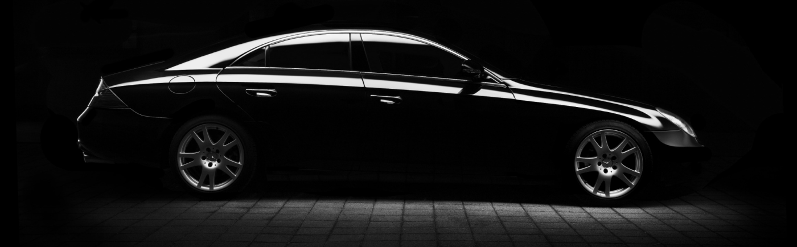

Штраф за відсутність автоцивілки в 2026 році та чи можна їздити без ОСЦПВ

Водія зупиняють для звичайної перевірки документів, він шукає поліс у бардачку й телефоні та раптом розуміє, що не пам’ятає, чи той ще чинний. Таке трапляється, зокрема, з тими, хто нещодавно купив машину й сподівається, що кілька днів без страховки минуть непомітно.
У статті розібрано, чи можна їздити без ОСЦПВ, що загрожує за порушення, чим відсутній поліс відрізняється від забутого вдома й коли поліція його перевіряє. Штраф за відсутність автоцивілки визначає Кодекс України про адміністративні правопорушення. Якщо договір уже закінчився, новий можна оформити онлайн у AUTO INS за посиланням «Оформити автоцивілку».
Чи можна керувати авто без ОСЦПВ
Ні, не можна. Обов’язкове страхування цивільно-правової відповідальності власників наземних транспортних засобів запроваджене окремим законом, і поліс потрібен кожному, хто виїжджає на дорогу власним авто. Це не додаткова опція на кшталт КАСКО, а умова законного користування машиною.
Сенс ОСЦПВ у тому, що збитки потерпілого в аварії в межах встановлених лімітів відшкодовує страхова компанія винуватця. Тому їзда без автоцивілки небезпечна не лише штрафом. Якщо винним у ДТП виявиться водій без чинного поліса, шкоду чужому авто чи здоров’ю доведеться компенсувати зі своєї кишені.
Найбільше ризикують ті, хто щойно придбав автомобіль, і ті, хто звик, що договір «десь є». Щоб не гадати, чи діє поліс, який лишився від попереднього власника, краще з’ясувати це до першої поїздки, а не після неї.
Яка відповідальність передбачена за відсутність поліса
Відповідальність за це передбачає стаття 126 КУпАП. Штраф за ОСЦПВ виражений у неоподатковуваних мінімумах доходів громадян, тому гривневу суму краще перевіряти в чинній редакції статті на офіційному порталі законодавства.
Штраф за відсутність страховки на авто накладають за сам факт керування без чинного договору. Сплата штрафу не легалізує подальшу їзду, адже поліс усе одно потрібен, щоб знову виїхати на дорогу.
Якщо ви не згодні з постановою, її можна оскаржити в порядку, встановленому КУпАП. Аргумент має бути предметним: наприклад, чинний договір на момент зупинки, а не те, що поліс збиралися оформити найближчими днями.
Обов’язок укласти договір закон покладає на власника автомобіля. Передаючи кермо родичеві чи знайомому, варто переконатися, що поліс чинний.
Чим відсутність страховки відрізняється від поліса, якого немає при собі
Це дві різні ситуації з різними наслідками. Авто без страховки означає ситуацію, коли договору на момент перевірки немає взагалі: його не оформили або він уже завершився. Якщо ж договір чинний, а документа під рукою немає, проблема лише в підтвердженні, а не в самій страховці.
Поліс може бути електронним, і показати його можна з екрана телефона. Відомості про чинні договори зберігаються в централізованій базі, тож за наявності доступу до неї інспектор може звірити їх за номером автомобіля. На практиці все залежить від того, чи вдасться підтвердити чинність договору, а рішення ухвалює інспектор.
Щоб у такій ситуації не втрачати час, корисно мати під рукою:
-
Файл поліса в пам’яті телефона, який можна відкрити й показати інспекторові навіть там, де немає стабільного інтернету.
-
Номер договору й дату його завершення в нотатках телефона, щоб не покладатися на пам’ять під час нервової зупинки.
-
Роздруківку поліса в бардачку, яка виручить, якщо телефон розрядиться або файл не відкриється саме тоді, коли поліс потрібен.
Коли поліція перевіряє наявність автоцивілки
Поліс запитують тоді, коли водія зупиняють із підстав, визначених законом, наприклад через порушення правил дорожнього руху. Разом із посвідченням і свідоцтвом про реєстрацію автомобіля інспектор може попросити й підтвердження страхування.
Страховку можуть попросити підтвердити, зокрема, у таких випадках:
-
Зупинка через порушення правил руху, під час якої разом із посвідченням і свідоцтвом про реєстрацію можуть попросити й поліс.
-
Оформлення ДТП, де учасники обмінюються даними про страхові договори, а відсутність поліса одразу стає очевидною.
-
Перевірка документів на стаціонарному посту чи блокпості, де документи на автомобіль можуть перевіряти в кожного водія.
Якщо поліс є, але файл не відкривається, назвіть номер договору й ввічливо запитайте, чи можна перевірити його в базі. Суперечка про те, чи поліс «точно був», нічого не змінить, а ось підтверджені дані можуть вирішити справу.
Покладатися на те, що перевірки не буде, нерозумно, бо страхове покриття потрібне ще до виїзду з двору.
Що робити, якщо строк дії поліса вже минув
Після дати завершення договір не діє, тому прострочена страховка на авто прирівнюється до відсутності поліса. Отже, штраф за відсутність автоцивілки загрожує й тому, чий договір просто завершився. Дату вказано в самому документі, і саме її варто порівняти з сьогоднішньою, якщо ви не впевнені.
Найрозумніше не виїжджати на дорогу, доки не оформлено новий договір. Його можна укласти онлайн у AUTO INS і не сідати за кермо до цього. Якщо автомобіль потрібно перемістити, безпечніше скористатися евакуатором або дочекатися нового поліса.
Якщо вас уже зупинили, а поліс виявився простроченим, не сперечайтеся про дати. Уважно перечитайте протокол перед підписом, перевірте номер авто та дані водія, а незгоду зафіксуйте письмово.
Перед оформленням підготуйте дані з посвідчення та свідоцтва про реєстрацію автомобіля, а отримавши поліс, одразу збережіть його файл у телефоні разом із нотаткою про дату завершення.